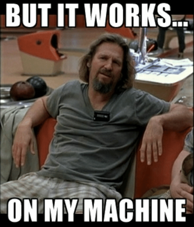
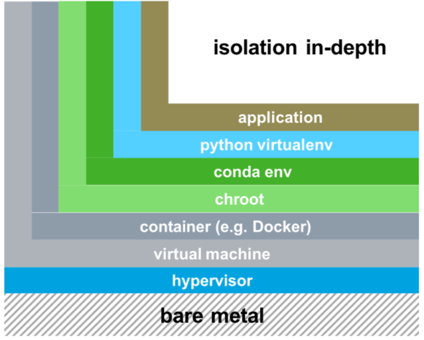
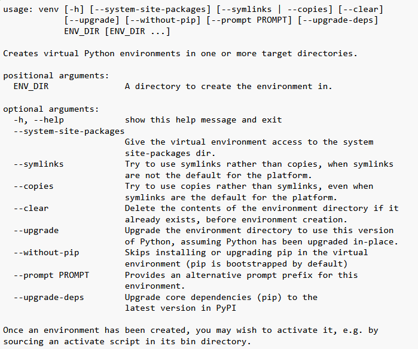
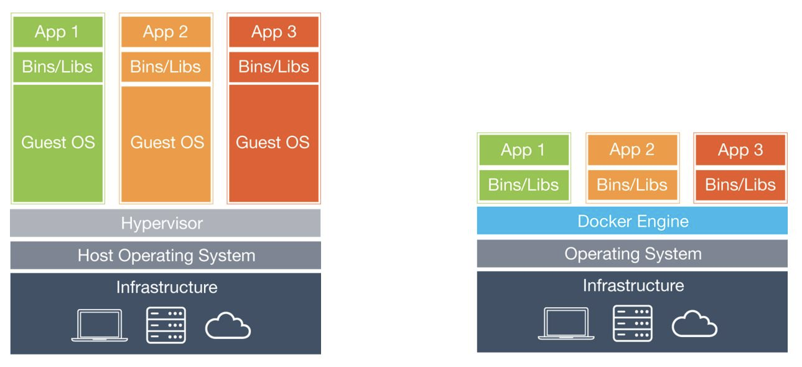
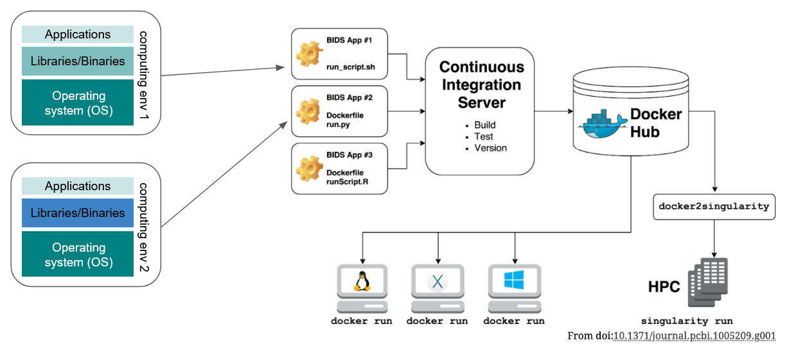

A super short introduction - Container & Virtualization#
Learning objectives#
Why do we use containers?
What are the various types of virtualization based solutions?
How to use Docker (maybe call it benefits of using Docker)?
*formulate objectives as questions or statements, e.g. motivation for virtualization?
Requirements#
a working version of Docker
access to a Unix terminal/shell
Motivation - Why do we need containers/virtualization?#
Virtualization techniques are means to ensure reproducibility of scietific findings/workflows as well as the facilitation of collaborative research.
The problem statement#
To motivate why utilizing containerization (or any kind of virtualization techniques for that matter) can be beneficial, let’s imagine the following scenario:
Your PI tasks you to do a couple of analyses for a new project. Lucky enough, you learn that one of your colleagues did run comparable analyses in the past and is so nice to share it with you. Even better: everything is assembled in one handy script called fancy_analyzes.py.
Your colleague tells you to run the script via navigating to the respective folder and type:
fancy_analysis.py
Amazing, you can relax and let the script do the work as it will just run on your data and computational environment …

...Well, unfortunately the script immediately produces errors or does not work on your data/ in your computational environment, such that you are not able to reproduce anything.
Why does this happen?!
Any ideas?
Each project in a lab depends on complex software environments
Operating system
Drivers
Software dependencies: Python/MATLAB/R + libraries
Backwards incompatibility is a major problem in the python ecosystem
Adherence to lab-intern standards with regard to data and code organization
Thus, sharing your code or using a repository might not be sufficient to ensure reproducibility and enable collaboration, i.e. because of software version or OS specific conflicts.
We try to avoid
“the computer I used was shut down a year ago, can’t rerun the results from my publication…”
“the analyses were run by my student, have no idea where and how…”
“well, I forgot to mention that you have to use Clang, gcc never worked for me…”
“don’t see any reason why it shouldn’t work on Windows…(I actually have no idea about Windows, but won’t say it…)”
“it works on my machine…”
etc.

The solution - virtualization techniques#
Well, how can we avoid aforementioned scenarios? This is the point where virtualization comes to the rescue. Virtualization is the process in which a system singular resource like RAM, CPU, Disk, or Networking can be ‘virtualized’ and represented as multiple resources. Thus, one can isolate/encapsulate computing environments or even whole operation systems, while still using the local hardware/resources.
There are Three main types of virtualization, which mainly differ in their level/depth of isolation:

Virtual environments:
Virtual environment keeps dependencies, i.e. specific versions of libraries/apps isolated from the system-wide installation
allows one to work with specific versions of libraries or Python itself without affecting other projects
limited to isolate python binaries and libraries but not the OS itself
Popular choices for the management and creation of virtual environments are:
Conda or python venv
Conda manual
# Updating conda
conda update conda
# List available Python version
conda search "^python$"
# Creating a Python 3.6 environment
conda create -n python3.6_test python=3.6
# Install directly some packages while creating a new environment
conda create -n python3.6_anaconda python=3.6 anaconda
# Installing additional packages
conda install -n python3.6_test scipy
# Remove unused packages and caches
conda clean -tipsy
# Activating the environment
source activate python3.6_test
# Deactivating the environment
source deactivate python3.6_test
# Remove conda environment
conda remove --name python3.6_test --all
python venv manual

Containers:
Emulate a whole operation system, which is isolated from the host system (including file system etc.)
Provide a mechanism to encapsulate environments and virtualized OS in a self-contained unit that can run anywhere, independant of the host OS
containers are very lightweight and fast to start up, modify or transfer
each container gets its own isolated user space (Docker containers)
Virtual Machines (VM’s):
emulate whole computer system (software+hardware)
run on top of a physical machine using a hypervisor
hypervisor shares and manages hardware of the host and executes the guest operating system
guest machines are completely isolated and have dedicated resources
VM’s are very heavy, difficult to transfer

Docker#
Docker is an open-source platform that allows for
building, deploying, and managing applications/research workflowsin self-sufficient, portablecontainersRecent additions to Docker include a straightforward GUI (Graphical User Interface) called Docker Desktop, but Docker is most powerful when making use of the Command-line aka the UNIX Shell.
this is also what we’ll be focussing on in this workshop
runs on all of the most common OS (i.e. Linux, Mac OS X and Windows)

Docker vs Singularity#
Docker:
docker can escalate privileges, so you can be effectively treated as a root on the host system
this is usually not supported or viewed in a positive light by administrators from HPC centers
Singularity:
a container solution created for scientific and application driven workloads
supports existing and traditional HPC resources
a user inside a Singularity container is the same user as outside the container
but you can use Vagrant to create a container (you have root privileges on your VM!)
Interesting tutorials and blog posts:
collect new ressoruces here !!!!!!